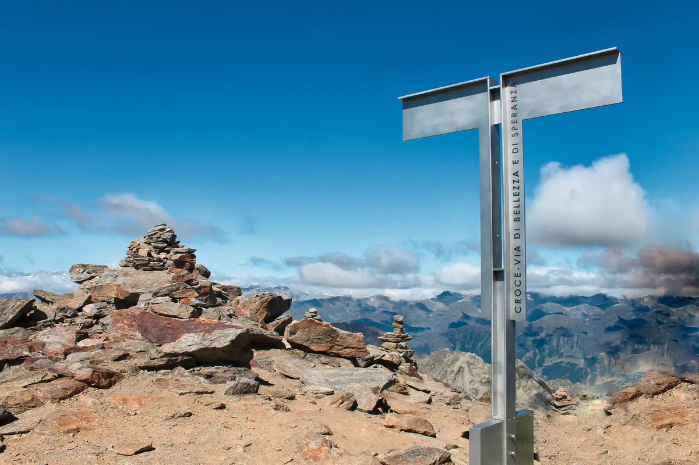

Pizzo Campo Tencia (3072 m) und Pizzo Croslina (3012 m)
Der höchste ganz im Tessin gelegene Berg verdankt seinen Namen dem rötlichen, eisenhaltigen Gestein: «tencie», also schmutzig, im Dialekt. In der Mitte des Kantons bietet er eine Rundsicht; vom Gipfel kann man ins Val Lavizzara absteigen oder die Via Alta Vallemaggia erreichen. Die Route ist grösstenteils markiert; an einigen Stellen Vorsicht vor Steinschlag, besonders wenn andere unterwegs sind. Im Frühsommer liegt Schnee in der Mulde vor der Bocchetta di Croslina. Von der Scharte (2864 m) kann man nach Norden zum Grat queren, der auf den Pizzo Croslina führt: ausgesetzte Stellen, Vorsicht vor allem im Abstieg.
- Länge
- 3 km
- Höhendifferenz
- +940 m
- Zeit
- 3 h für den Pizzo Campo Tencia, 4 h mit dem Pizzo Croslina
- Schwierigkeit
- T4+ Pizzo Campo Tencia, T6 mit dem Pizzo Croslina
- Ausrüstung
- Gute Bergschuhe